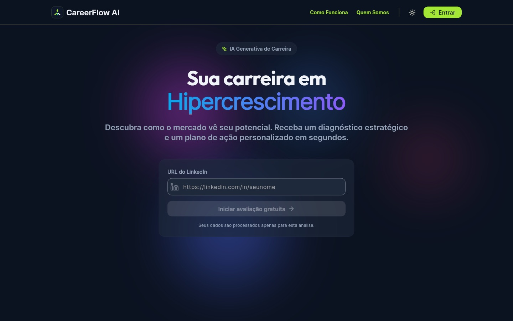
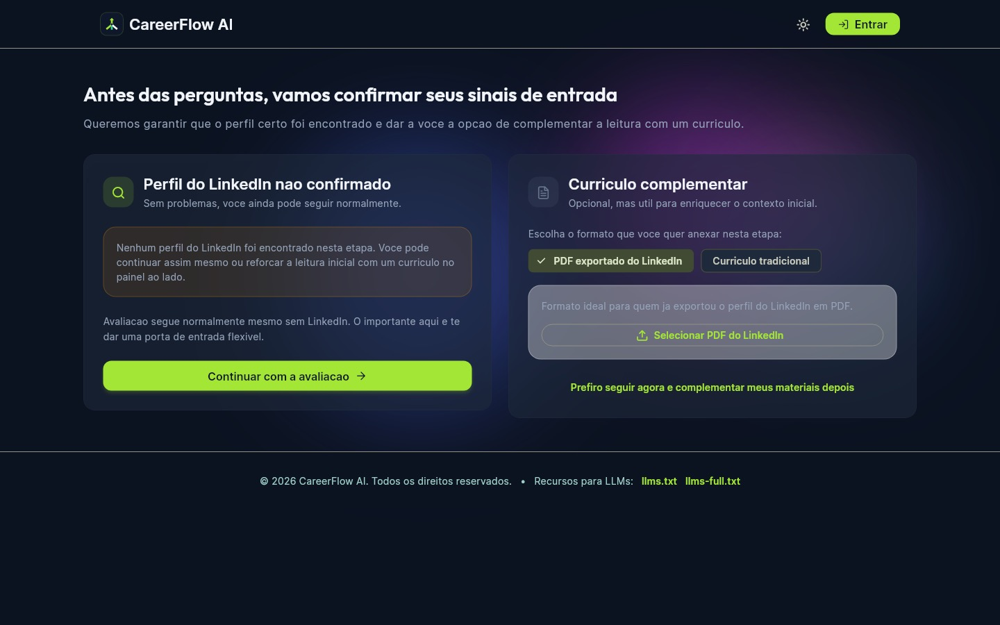
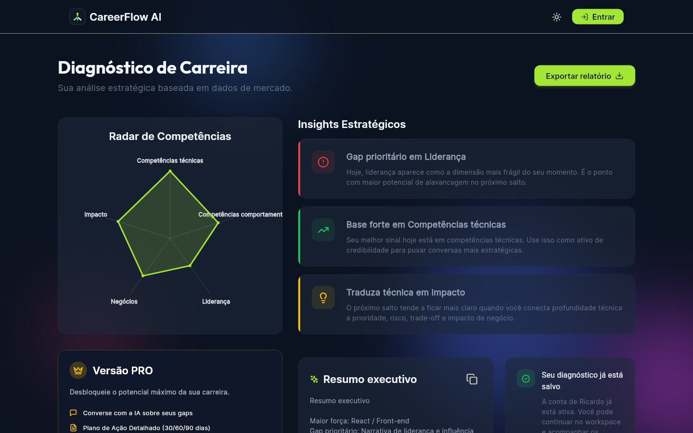
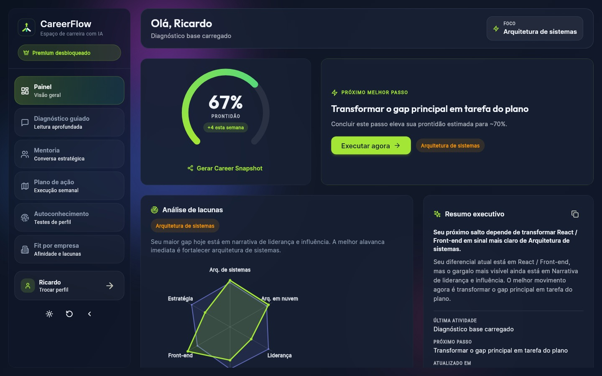
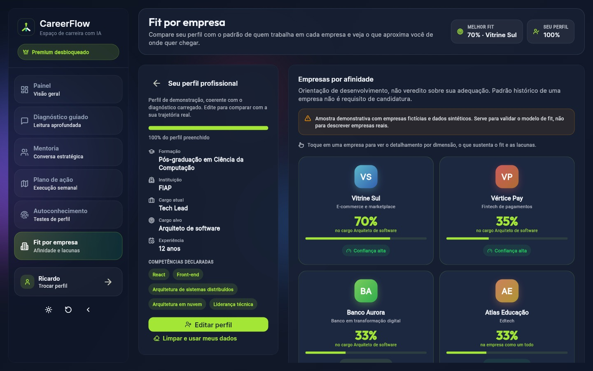
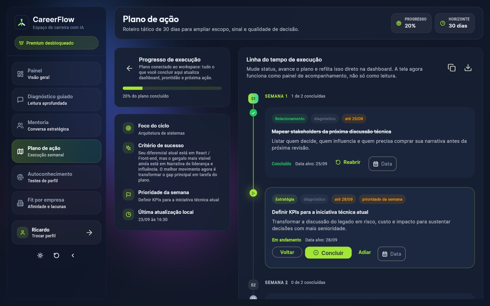
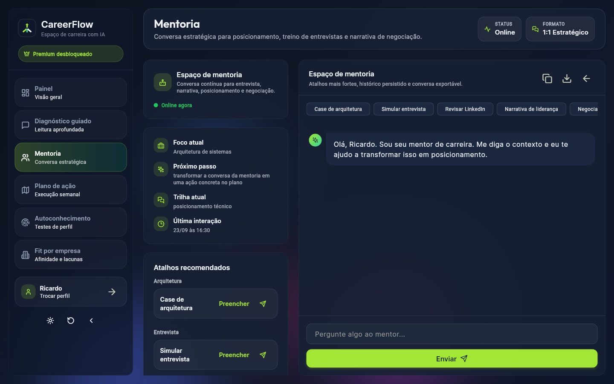
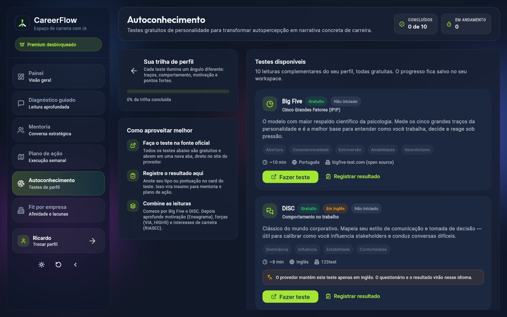
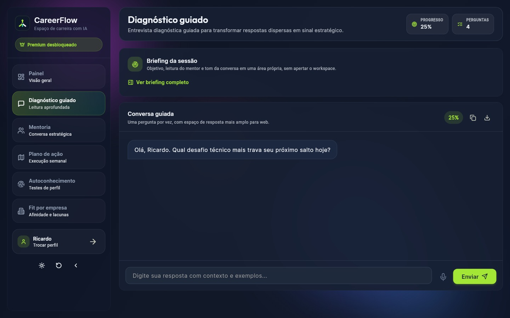

Como uma pessoa atravessa o CareerFlow, do primeiro clique ao próximo cargo.
A jornada foi redesenhada na reunião de 30/08/2026 em torno de uma constatação: nosso público chega com dor aguda e só fica se continuar vendo progresso. Esta página mostra os degraus, as decisões em cada um e as telas que já existem no protótipo.
4 degraus · grátis → plano → contínuo → sob demanda2 modos · busca ativa e desenvolvimento contínuo2 rotas · gestão e especialista
01 · Mapa da jornada
Cinco momentos, cada um com uma pergunta diferente na cabeça do usuário.
A linha de emoção mostra onde a experiência precisa entregar alívio. O ponto mais baixo é antes do produto; o ponto de virada é o Plano de Carreira.
0 · GatilhoDescoberta—
1 · DescobrirDiagnóstico grátisR$ 0 · 5 minutos
2 · DecidirPlano de CarreiraR$ 197 · pagamento único
3 · EvoluirCarreira ContínuaR$ 49/mês
4 · AcelerarSob demandaR$ 29–49 por uso
Pergunta do usuário
“Estou ficando para trás?” Layoff, promoção travada ou medo da IA.
“Como o mercado me vê?”
“Qual é o meu próximo passo, exatamente?”
“Estou avançando?”
“Estou pronto para esta vaga?”
O que ele faz
Vê um post no LinkedIn, recebe indicação ou encontra conteúdo sobre carreira em tech.
Envia o PDF do LinkedIn (ou currículo) e responde perguntas comportamentais básicas.
Faz o teste comportamental completo, a entrevista guiada de conquistas (STAR), define objetivos e critérios (salário, local, modelo).
Faz check-in semanal de 5 min, marca tarefas do PDI, lê o clipping e ajusta critérios.
Compra uma entrevista simulada ou um CV ajustado quando surge uma vaga concreta.
O que entregamos
Conteúdo de autoridade e um convite para o diagnóstico.
Raio-x de forças e lacunas
SWOT simples
Leitura geral do mercado
Fit por empresa com vagas abertas
Perfil de quem chegou onde ele quer chegar
Sugestões para LinkedIn e CV
Organizador (Kanban) de job search
PDI com recursos curados
1º mês do Contínuo incluso
PDI Smart com progresso e metas
Clipping de vagas, empresas e eventos
Fit recalculado quando o mercado muda
Visibilidade opt-in para headhunters
Mock interview comportamental ou técnica, com nota
Análise de aderência CV × vaga
Créditos extras de conversa
Emoção
Canal
LinkedIn, indicação, eventos
Web
Web
Web + WhatsApp / e-mail
Web
Métrica
diagnósticos / mês
≥ 6% viram Plano
≤ 5% de reembolso
≥ 35% assinam · churn ≤ 9%
10–16% da base / mês
02 · Modos e rotas
O mesmo produto atende dois momentos de vida.
Quem está em busca ativa paga pela urgência e tende a sair ao ser contratado. Quem está empregado paga pela evolução contínua. A escada de preços foi desenhada para os dois.
Modo agudo · busca ativa
“Perdi o emprego” ou “preciso sair daqui”
Precisa de foco e velocidade: saber onde aplicar, com qual narrativa, e organizar dezenas de processos.
Diagnóstico→Plano de Carreira→Kanban + CV por vaga→Mock interview→Contratado
Mais usa
Fit por empresa, vagas abertas, organizador de job search, sob demanda.
Risco
Cancelar ao ser contratado. Resposta: oferecer o Contínuo como “próximo ciclo” de desenvolvimento no novo cargo.
Modo contínuo · desenvolvimento
“Estou bem, mas quero o próximo cargo”
Precisa de direção e constância: um plano de desenvolvimento que ande mesmo com a rotina puxando para o operacional.
Diagnóstico→Plano de Carreira→PDI Smart semanal→Clipping→Sob demanda na hora certa
Mais usa
PDI Smart, check-in semanal, clipping de empresas e eventos, recursos curados.
Risco
Esfriar sem perceber progresso. Resposta: metas curtas, progresso visível e notificação no WhatsApp.
Rota A · Gestão
Sênior → coordenação ou gerência
PDI puxa comunicação, negociação e gestão de conflitos; fit prioriza empresas com trilha de liderança.
Rota B · Especialista
Sênior → staff, principal ou arquiteto
PDI puxa arquitetura, IA aplicada e influência técnica; fit prioriza empresas com carreira em Y.
03 · Fluxo de conversão e monetização
Onde a pessoa decide, e o que acontece se ela disser não.
As taxas são as premissas do Ano 1 do modelo financeiro v2. Cada “não” tem um caminho de volta, sem prender o cliente.
0
Descoberta
LinkedIn, indicação, eventos de carreira
350 → 3.600 leads/mês
Aquisição majoritariamente orgânica no Ano 1 (conteúdo dos fundadores). CAC médio de R$ 120–140 por Plano vendido.
Faz o diagnóstico?
Sem cadastro pesado: PDF do LinkedIn e poucas perguntas.
1
Diagnóstico grátis
Raio-x, SWOT simples, leitura de mercado
R$ 0 · custo ≈ R$ 0,50
Não converte: recebe conteúdo e convite para refazer o diagnóstico quando o momento mudar.
Compra o Plano?6–7%
2
Plano de Carreira
Setup completo + 1º mês de tudo incluso
R$ 197
Arrependimento em 7 dias (CDC): reembolso integral, previsto em ~5% dos Planos. Liberação gradual reduz abuso sem ferir o direito.
Assina após o mês incluso?35–45%
3
Carreira Contínua
PDI Smart, clipping, fit atualizado
R$ 49–69/mês
Não assina: mantém o Plano, o PDI e o Kanban em modo leitura, e pode voltar quando quiser.
Surge uma oportunidade?
Compra pontual, sem mudar de plano.
4
Sob demanda
Mock interview, CV por vaga, créditos
R$ 29–49/uso
Cancela o Contínuo (churn de 9% a 5,5% ao mês): volta por um novo Plano, com condição especial para ex-clientes.
04 · Ciclo semanal da Carreira Contínua
Um ritual de 5 minutos que mantém o plano vivo.
O coach de IA não é um chat genérico: ele segue o PDI, pergunta o que avançou e devolve o próximo passo. Conversa livre existe, mas dentro do tema desenvolvimento.
Segunda
Lembrete
Notificação no WhatsApp ou e-mail com a meta da semana.
5 minutos
Check-in
Texto ou áudio: o que fez, onde travou, o que mudou no trabalho.
Na hora
PDI atualizado
Tarefas concluídas viram progresso visível no painel.
Na hora
Próximo passo
Uma ação concreta e um recurso curado adequado ao perfil de aprendizagem.
Sexta
Clipping
Vagas, notícias das empresas-alvo e eventos da semana.
E a semana recomeça. A cada ciclo o fit com as empresas-alvo é recalculado.
Limite por plano, não por hora
Uso “honesto” cabe no plano; créditos extras para quem estiver em fase aguda. Mantém o custo de IA previsível.
Consumo visível
Uma barra de uso mostra quanto do mês já foi usado, sem bloqueio surpresa.
Modelo certo para cada tarefa
Modelo grande para análise e PDI; modelo leve para reescrever frases e resumir notícias.
05 · Mapa de telas do protótipo
O caminho já navegável em careerflow.com.br
Protótipo em Flutter Web com dados de demonstração. As telas públicas correspondem ao diagnóstico grátis; o espaço “Premium” corresponde ao Plano de Carreira e à Carreira Contínua.
careerflow.com.br ↗Em Entrar, escolha o perfil Ricardo · Premium (1 clique) ou use winners / fiap2026. O perfil Visitante · Gratuito mostra os bloqueios.

/
1Landing grátis
Entrada pelo LinkedIn e início do diagnóstico gratuito.

/assessment
2Avaliação grátis
Envio do PDF do LinkedIn ou currículo e 4 perguntas iniciais.

/diagnosis
3Diagnóstico grátis
Radar, gaps, resumo executivo e convite para o upgrade.

/dashboard
4Painel todos
Prontidão, próximo melhor passo e resumo executivo.

/fit
5Fit por empresa premium
Afinidade por empresa, dimensões do fit e lacunas a trabalhar.

/plan
6Plano de ação premium
PDI em semanas, status, datas e prioridade da semana.

/mentor
7Mentoria premium
Conversa guiada por atalhos: entrevista, LinkedIn, narrativa.

/discovery
8Autoconhecimento premium
Testes de perfil reconhecidos, com progresso e resultados.

/deep-dive
9Diagnóstico guiado premium
Entrevista conversacional que aprofunda objetivos e conquistas.
06 · Decisões de design da jornada
O que a reunião de 30/08 mudou na experiência.
Cada decisão responde a um risco concreto de custo, confiança ou retenção.
01
Valor no primeiro dia
O diagnóstico grátis precisa surpreender em 5 minutos: é a variável que mais move o resultado financeiro.
02
PDF do LinkedIn em vez de raspagem
O usuário exporta o próprio perfil. Menos custo, menos risco jurídico e a mesma informação.
03
Coach com protocolo, não chat livre
O acompanhamento segue o PDI. Isso diferencia o produto de um ChatGPT genérico e controla o custo por conversa.
04
WhatsApp para lembrar, web para trabalhar
Notificação onde a pessoa já está; sem exigir download de mais um app no MVP.
05
Headhunters só com opt-in
Visibilidade para recrutadores independentes é opcional, anonimizada e controlada pelo usuário (LGPD).
06
Fontes de mercado declaradas
Fit com empresas vem de GPTW, rankings, reputação e vagas indexadas; a interface diz de onde vem cada sinal.